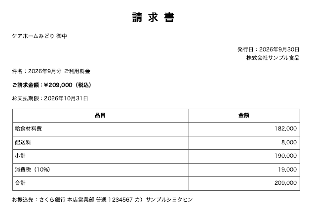
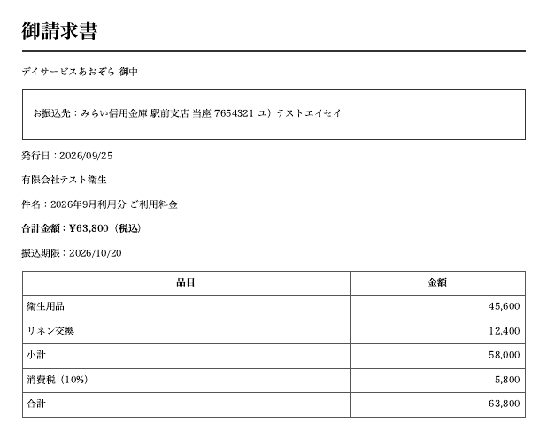
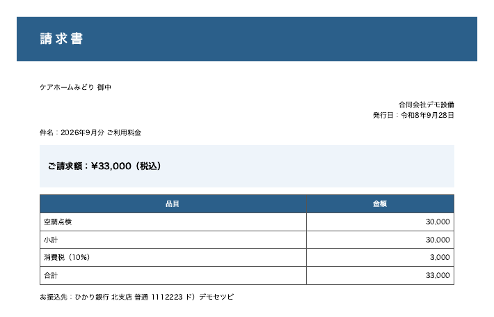
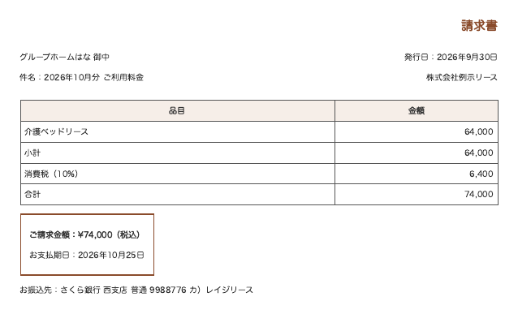

| 事業所 | 取引先 | 請求日 | 支払期日 | 金額（税込） | 振込先 | 確認してほしいこと |
|---|---|---|---|---|---|---|
| ケアホームみどり | 株式会社サンプル食品 | 9月30日 | 10月31日 | 209,000 | さくら銀行 本店営業部 | |
| デイサービスあおぞら | 有限会社テスト衛生 | 9月25日 | 10月20日 | 63,800 | みらい信用金庫 駅前支店 | |
| ケアホームみどり | 合同会社デモ設備 | 9月28日 | 33,000 | ひかり銀行 北支店 | 支払期日が見つかりません | |
| グループホームはな | 株式会社例示リース | 9月30日 | 10月25日 | 74,000 | さくら銀行 西支店 | 合計が合いません（64,000円＋消費税6,400円＝70,400円のはずが、74,000円） |
お試しに費用はかかりません。続ける場合の費用は、内容をうかがってお見積りし、ご了承いただくまで発生しません。
受け渡しの方法・保管・削除のタイミングは、先に法人さまの決まりをうかがい、対応できる方法で合意してからお預かりします。秘密保持の取り決めが必要でしたら、内容を確認したうえで、お預かりする前に結びます。お願いするのは、お預かりの前に受け渡しの方法と削除の時期を一緒に決めていただくことと、請求書の送付、結果の確認です。
紙をスキャンした請求書は、別にご相談ください。
お相手の目安：事業所が3〜20か所ほどで、社内にシステムの担当がいない法人。